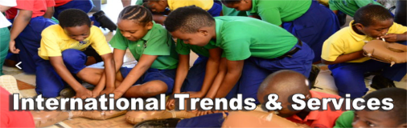

International Trends & Services

The mission of the International Trends and Services facet is to expand the global platform for programs designed and developed to service the educational, health and cultural needs of people of African descent throughout the world. All programmatic components of the facet are delivered through measurable and sustainable service delivery methods that reach women and their families.
The foremost goal of the International Trends and Services facet is to provide opportunities for tangible service in other countries. Our “boots on the ground” approach provides for more personalized methods for assisting and improving the lives of women, children and men worldwide through long-term programs committed to empowerment and public policy leadership in advocating for social justice